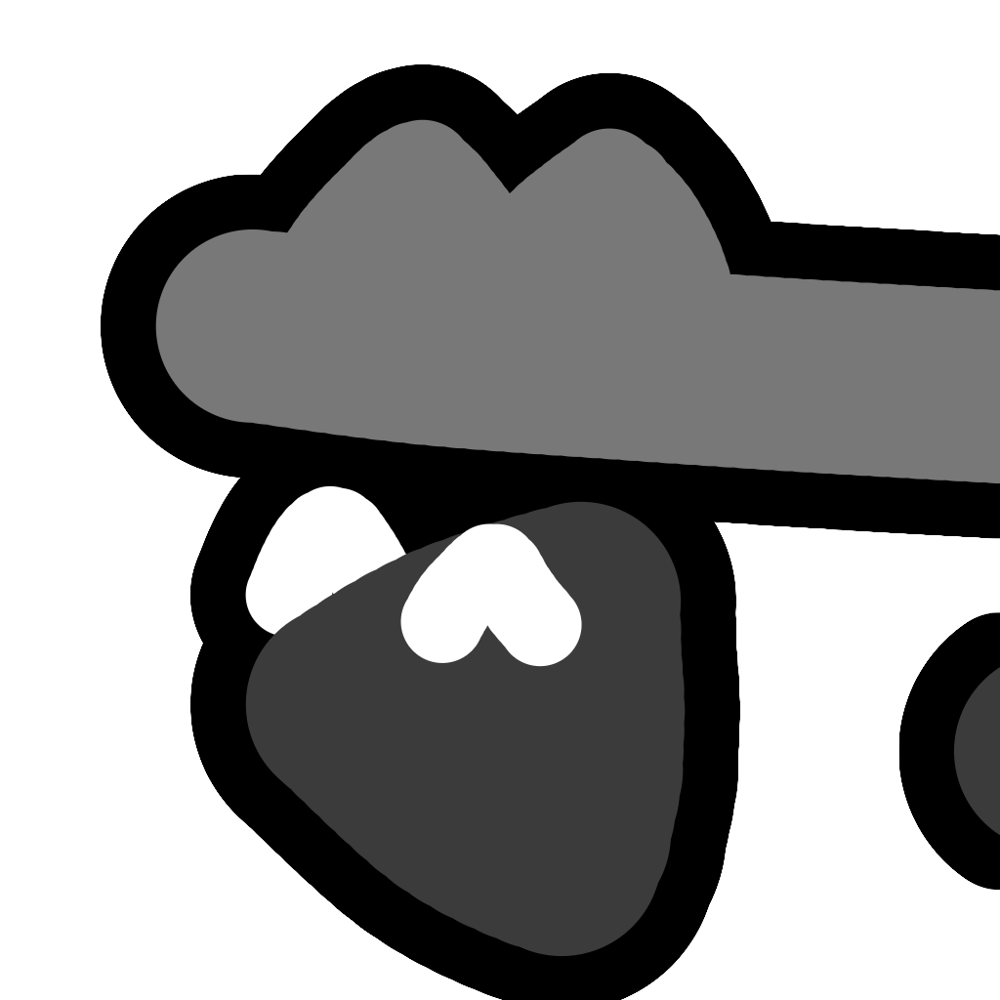

Welcome!
This is a page where I put all of my links, projects, and whatever else I make.I go by balt online. The story behind the name is a long one.
I currently am confident with Rust, rusty with Python, okay with JavaScript, C#, and Lua, and can probably make something basic in Java, Haskell, or C.
I'm 18, queer, and I'm happy to help you out if you need it.
Favorite games include:
- Rain World
- Celeste
- Minecraft
- Geometry Dash
- A Dance of Fire and Ice
- Rhythm Doctor
- Baba Is You
- MO: Astray
- Patrick's Parabox
Thanks for reading this the whole way through, and I hope you have a good day! 